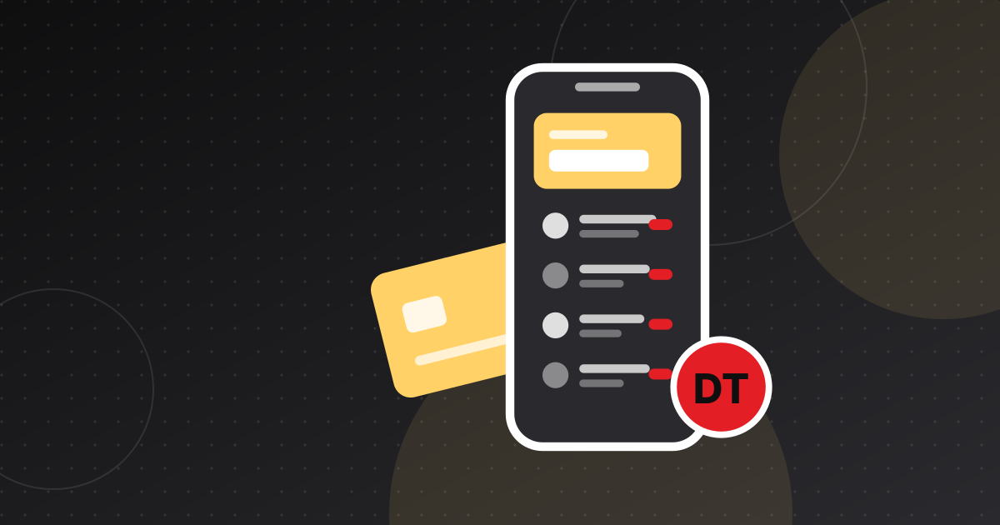

Flouci : portrait de l'appli de paiement mobile tunisienne
Fondée sous le nom de Kaoun en 2018, Flouci est devenue l'une des applications fintech les plus connues de Tunisie : wallet, compte ouvert à distance et paiement marchand.

À retenir
- Flouci est développée par Kaoun, startup fondée en 2018 par Anis Kallel, Nebras Jemel et Rostom Bouazizi ; l'application a été lancée en 2020.
- Ce n'est pas une banque : les comptes sont tenus par des banques partenaires (Attijari Bank et BTE ont été citées), Flouci se présentant comme facilitateur de paiement autorisé par la BCT.
- Forbes Middle East faisait état de 67 000 utilisateurs actifs et de 91,2 millions de dollars de transactions à fin 2024 ; en juin 2026, Flouci revendiquait plus de 140 000 comptes ouverts.
- Sa croissance passe désormais par l'acceptation marchande (Monoprix, plugin Shopify) et par des partenariats comme Max It d'Orange.
Flouci est l'un des noms les plus visibles de la fintech tunisienne : une application qui réunit un portefeuille électronique, un compte bancaire ouvert depuis le smartphone et des outils d'encaissement pour les commerçants. Derrière, la startup Kaoun a fait le choix de travailler avec les banques plutôt que contre elles. Portrait.
Flouci en bref
- Société : Kaoun, fondée en 2018 par Anis Kallel, Nebras Jemel et Rostom Bouazizi, selon We Are Tech Africa. Forbes Middle East retient 2020, année du lancement de l'application.
- Implantation : Tunis ; Forbes Middle East mentionne un siège en Tunisie et aux Pays-Bas.
- Modèle : wallet adossé à un compte chez une banque partenaire, cartes et encaissement marchand.
- Statut : l'entreprise se présente comme facilitateur de paiement autorisé par la Banque Centrale de Tunisie (BCT), certifié PCI DSS depuis novembre 2023.
De la signature électronique au wallet
Le premier produit de Kaoun n'était pas un service de paiement. En avril 2020, en plein confinement, la startup proposait l'obtention à distance de la signature électronique DIGIGO de TunTrust, l'autorité nationale de certification, via un entretien vidéo avec un agent. Kaoun affirmait avoir développé avec TunTrust son propre logiciel d'identification 100 % à distance.
Cette brique d'onboarding a servi de socle au paiement. En novembre 2020, Attijari Bank, qui incubait Kaoun, a lancé des services basés sur Flouci : un compte « Webank » ouvert entièrement en ligne par visioconférence, et un wallet Flouci associé pour les virements en temps réel et le paiement par QR code chez les commerçants affiliés. En juin 2022, la BTE (Banque de Tunisie et des Emirats) a lancé à son tour une offre via l'application, raccordée au switch national de paiement mobile que la BCT venait de lancer. Le schéma est constant : Flouci apporte la technologie et l'expérience client, une banque agréée tient le compte.
Pour comprendre les règles de l'entrée en relation à distance, voir notre article sur l'e-KYC et la LBC/FT en Tunisie.
Produits
D'après Forbes Middle East et l'entreprise, l'offre comprend :
- Comptes : compte gratuit avec IBAN et compte d'épargne, ouverts via les banques partenaires.
- Cartes : cartes virtuelles et physiques en dinars. En novembre 2024, Flouci et la BTE ont lancé une carte physique livrée à domicile, réservée aux abonnements payants « Plus » et « Premium ».
- Wallet : transferts par numéro de téléphone ou QR code, retrait sans carte aux DAB, paiement de factures et recharges téléphoniques.
- Réseau cash : des commerces de proximité pour le dépôt et le retrait d'espèces.
- Outils marchands : passerelle de paiement avec modules WooCommerce, PrestaShop et Converty, et depuis juin 2026 un plugin natif Shopify.
Traction et financement
Les chiffres publics sont épars et proviennent surtout de l'entreprise ou de classements fondés sur ses données :
- Octobre 2024 : environ 60 000 utilisateurs actifs, 57 902 comptes bancaires ouverts et 11 000 cartes émises (Forbes Middle East, 30 Under 30).
- Décembre 2024 : 67 000 utilisateurs actifs, plus de 305 000 téléchargements et 91,2 millions de dollars de transactions (Forbes Middle East, Fintech 50 2025).
- Juin 2026 : près de 500 000 téléchargements et plus de 140 000 comptes ouverts depuis le lancement (Entreprises Magazine).
Selon Forbes Middle East, Flouci a levé plus de 2 millions de dollars auprès notamment de Launch Africa Ventures, Rally Cap VC et Musha Ventures. En mai 2024, elle figurait parmi les 22 startups de la deuxième cohorte du Visa Africa Fintech Accelerator ; en 2020, elle avait rejoint le Google for Startups Accelerator. Pour le contexte, voir notre panorama du paiement mobile en Tunisie.
Partenariats et acceptation
La stratégie récente porte sur l'acceptation et la distribution :
- Monoprix (mars 2025) : paiement en caisse par scan d'un QR code Flouci.
- Orange Tunisie (avril 2025) : le wallet Flouci est intégré à l'application Max It pour les recharges mobiles et internet ; paiement de factures et transferts sont annoncés.
- Shopify (juin 2026) : un plugin qui permet aux commerçants tunisiens d'encaisser en ligne sans développeur, présenté comme une alternative au paiement à la livraison.
Modèle réglementaire et questions ouvertes
Flouci ne détient pas d'agrément bancaire. La collecte de dépôts étant réservée aux banques, elle s'appuie sur des partenaires comme Attijari Bank et la BTE. En janvier 2024, la BCT a publié des lignes directrices sur les facilitateurs de paiement, qui imposent un adossement à un acquéreur agréé ; Flouci se dit autorisée dans ce cadre.
Restent les questions communes à toute la fintech tunisienne :
- L'international. Forbes Middle East évoquait des lancements au Maroc, en Algérie et au Bénin en 2025. Nous n'avons trouvé aucune confirmation publique de ces ouvertures.
- La concurrence. Des wallets adossés aux opérateurs télécoms et des établissements de paiement agréés sont arrivés en 2026, avec des réseaux d'agences.
- L'économie du modèle. Comptes gratuits et commissions basses exigent une échelle que le marché tunisien n'offre qu'en partie.
Pour situer les autres acteurs, voir notre cartographie de la fintech tunisienne.
Entreprises citées
Questions fréquentes
Flouci est-elle une banque ?
Non. Flouci est une application conçue par la startup Kaoun. Les comptes sont tenus par des banques partenaires comme Attijari Bank et la BTE, et Flouci se présente comme facilitateur de paiement autorisé par la Banque Centrale de Tunisie.
Qui a fondé Flouci ?
Kaoun a été fondée en 2018 par Anis Kallel, Nebras Jemel et Rostom Bouazizi, selon We Are Tech Africa. L'application Flouci a été lancée en 2020.
Combien Flouci a-t-elle levé ?
Selon Forbes Middle East (2024), plus de 2 millions de dollars, auprès notamment de Launch Africa Ventures, Rally Cap VC et Musha Ventures. Le détail des tours n'a pas été largement publié.
Un e-commerçant peut-il accepter Flouci ?
Oui. Flouci propose une passerelle avec modules WooCommerce, PrestaShop et Converty, et un plugin natif Shopify depuis juin 2026. En magasin, le client paie en scannant un QR code.
Sources
- Nebras Jemel and Anis Kallel – 30 Under 30 2024 — Forbes Middle East
- Flouci (by Kaoun) – The Middle East's Fintech 50 2025 — Forbes Middle East
- En Tunisie, Flouci se mue en banque mobile — We Are Tech Africa
- Attijari bank lance un nouveau service de paiement mobile via l'application Flouci — Managers
- Tunisie : Flouci lance un plugin de paiement natif pour Shopify — Entreprises Magazine
- Orange Tunisie et Flouci : un partenariat stratégique — Challenges TN
Cet article est fourni à titre d'information et ne constitue pas un conseil juridique, financier ou en investissement. Les chiffres sont datés et sourcés ; vérifiez les dernières publications officielles avant toute décision.